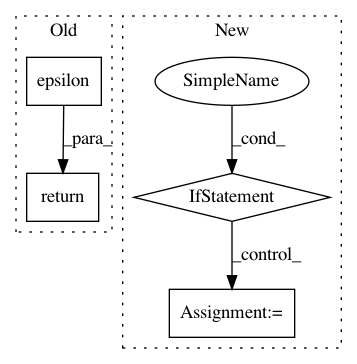

1344dee35dbacaaaaabdaf452f0dfe74e3ab50e4,torchsample/modules/constraints.py,MaxNorm,__call__,#MaxNorm#Any#,42
Before Change
def __call__(self, p):
norms = K.sqrt(K.sum(K.square(p), axis=self.axis, keepdims=True))
desired = K.clip(norms, 0, self.m)
p *= (desired / (K.epsilon() + norms))
return p
def get_config(self):
return {"name": self.__class__.__name__,
"m": self.m,
After Change
self.module_filter = module_filter
def __call__(self, module):
if hasattr(module, "weight"):
w = module.weight.data
norm = torch.norm(w,2,self.axis).expand_as(w) / self.m
norm[norm<1.] = 1.
w.div_(norm)
class NonNeg(Constraint):
Constrains the weights to be non-negative.
In pattern: SUPERPATTERN
Frequency: 3
Non-data size: 4
Instances
Project Name: ncullen93/torchsample
Commit Name: 1344dee35dbacaaaaabdaf452f0dfe74e3ab50e4
Time: 2017-04-19
Author: ncullen@modv-vlan533.0288.apn.wlan.wireless-pennnet.upenn.edu
File Name: torchsample/modules/constraints.py
Class Name: MaxNorm
Method Name: __call__
Project Name: adalca/neuron
Commit Name: 9bcf05406490ca72b698db24636e5f2a51a5c82a
Time: 2017-06-14
Author: adalca@sumac.csail.mit.edu
File Name: neuron/metrics.py
Class Name: CategoricalCrossentropy
Method Name: loss
Project Name: ncullen93/torchsample
Commit Name: 1344dee35dbacaaaaabdaf452f0dfe74e3ab50e4
Time: 2017-04-19
Author: ncullen@modv-vlan533.0288.apn.wlan.wireless-pennnet.upenn.edu
File Name: torchsample/modules/constraints.py
Class Name: UnitNorm
Method Name: __call__